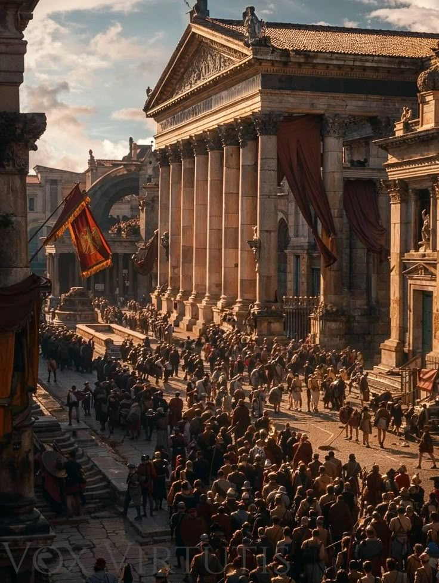

Batı Roma

M.S. 395'te ayrılan imparatorluğun Batı kanadı, barbar istilaları ve ekonomik çöküşle mücadele etmiştir.
M.S. 476 yılında son imparator Romulus Augustus'un tahttan indirilmesiyle Antik Çağ sona ermiş ve Orta Çağ başlamıştır.

M.S. 395'te ayrılan imparatorluğun Batı kanadı, barbar istilaları ve ekonomik çöküşle mücadele etmiştir.
M.S. 476 yılında son imparator Romulus Augustus'un tahttan indirilmesiyle Antik Çağ sona ermiş ve Orta Çağ başlamıştır.